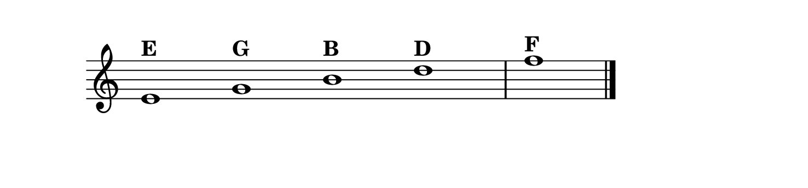
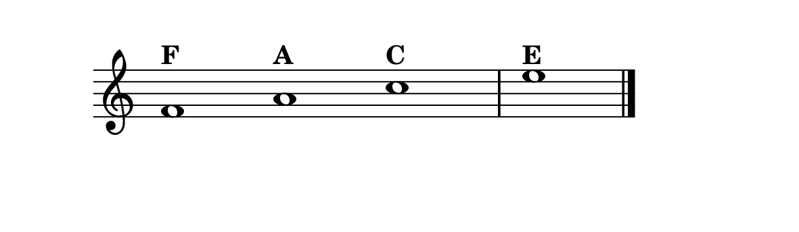
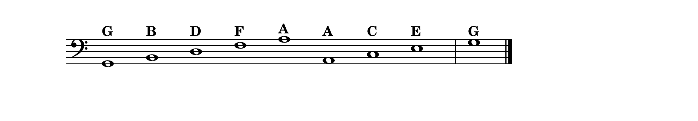
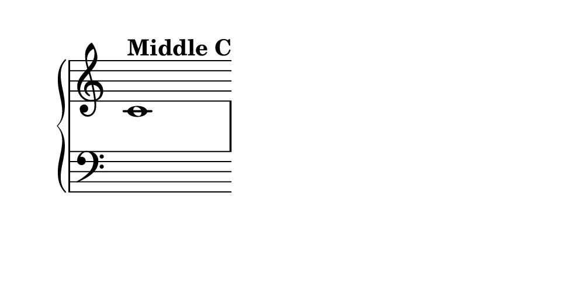
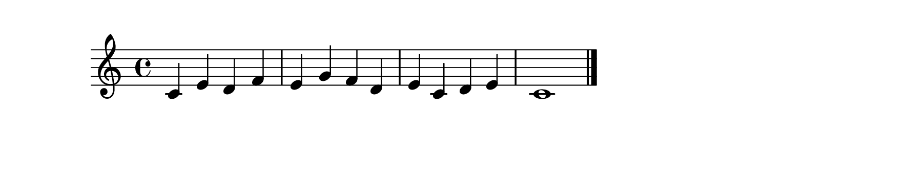
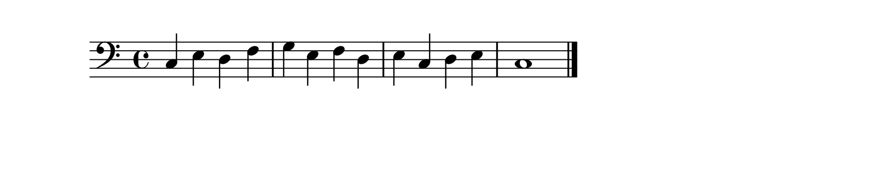

The Language of Written Music
In the last lesson, you found Middle C, placed your hands in C Position, and played your very first notes. But imagine someone hands you a piece of sheet music and says, play this. Right now, those dots and lines might look like a foreign language. By the end of this lesson, you will be reading that language.
Written music is one of humanity’s great inventions. It allows a composer who lived three hundred years ago to whisper directly into your ear, telling you exactly which notes to play. Learning to read music is not about memorizing rules,it is about gaining access to an enormous library of beauty that is already waiting for you.
The Staff
All written music begins with the staff: a set of five horizontal lines with four spaces between them. Every note sits either on a line or in a space. The lines are counted from the bottom up,the lowest is the first line, the highest is the fifth.
By itself, a staff is just a grid of possibilities. What gives it meaning is a symbol at the beginning called a clef. The clef tells you which notes correspond to which lines and spaces. Think of the clef as a decoder ring.
The Treble Clef
The treble clef (also called the G clef) is the elegant, curving symbol at the beginning of the upper staff. Its inner curl wraps around the second line, marking that line as the note G.
The five lines of the treble clef, from bottom to top, carry the notes E, G, B, D, F. Remember them with: Every Good Boy Does Fine.

The four spaces spell out F–A–C–E,which conveniently spells FACE. No mnemonic needed.

The Bass Clef
The bass clef (the F clef) is used for the lower staff, typically played by the left hand. Its two dots sit above and below the fourth line, marking it as F.
The bass clef lines, bottom to top: G, B, D, F, A (Good Boys Do Fine Always). The spaces: A, C, E, G (All Cows Eat Grass).

The Grand Staff
Piano uses two staves joined together called the grand staff: treble clef on top (right hand) and bass clef below (left hand), connected by a brace. Between them, Middle C sits on its own ledger line,a short line just below the treble staff or just above the bass staff.

Lines and spaces alternate. If a note is on a line, the next note up is always in a space, and vice versa. The alphabet never skips.
Ledger Lines
When a melody goes higher or lower than the five staff lines, we extend with short temporary lines called ledger lines. You have already seen one: Middle C sits on a ledger line. In beginner music, you will rarely see more than one or two.
Your First Reading Exercises
Exercise 1: Right Hand Reading
Place your right hand in C Position (thumb on Middle C). Look at each note below, identify its line or space, say the letter name in your head, and play it. Go slowly,there is no tempo yet.

Exercise 2: Left Hand Reading
Place your left hand in C Position (pinky on the C below Middle C). This exercise is in the bass clef. Identify each note and play the corresponding key.

Tips for Learning to Read
Start with the notes you know. You already know C Position. Build outward from those familiar landmarks rather than memorizing everything at once.
Say the note names aloud. This creates a connection between the visual symbol, the spoken word, and the physical key. Over time, you will simply see the note and your finger moves to the right key.
Use the landmarks. The treble clef’s second line is always G. The bass clef’s fourth line is always F. Middle C is always on its ledger line. Find the nearest landmark and count from there.
Be patient with the bass clef. Most beginner melodies are in the treble clef, so the bass clef gets fewer repetitions. Make a point of practicing it every day, even for a few minutes.
Reading music is not about memorizing rules. It is about learning a language,one that lets you hear the thoughts of composers across centuries, and eventually, to write down your own.